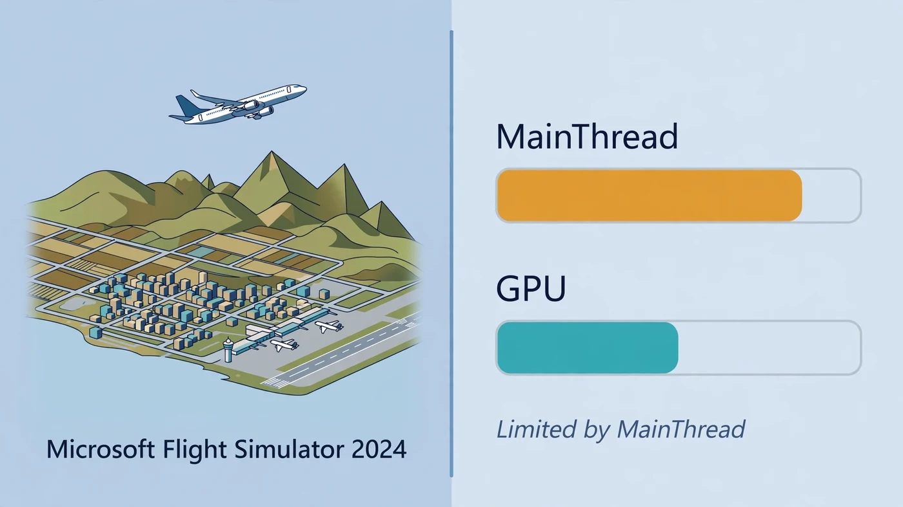

Microsoft Flight Simulator 2024 Bottleneck: Is Your CPU or GPU Limiting Your Frames?
The Microsoft Flight Simulator 2024 bottleneck is almost always the CPU's main thread, not the graphics card. If your frame rate barely moves when you lower the resolution, and the developer overlay reads "Limited by MainThread", a faster GPU will not fix it: the sim's simulation, scenery and traffic work funnels through a single CPU thread, and that thread sets your frame-rate ceiling. This guide shows how to tell which side is limiting you, which settings free the main thread, which settings free the GPU, and which upgrade actually helps.

Microsoft Flight Simulator 2024 Bottleneck: The Short Answer
Microsoft Flight Simulator 2024 is one of the most CPU-bound games you can run. At a busy airport, on final approach over a detailed city, or in a complex airliner with live traffic, the sim is limited by the CPU's main thread. The graphics card only becomes the limit when you raise the resolution, render scale, clouds or shadows far enough that pixel work outweighs simulation work. That is why the classic upgrade instinct fails here: buying a bigger GPU while the main thread is the ceiling buys almost nothing.
The fix starts with diagnosis, not spending. The sim's own developer overlay names your limiter in plain text, and a two-minute resolution test confirms it. Our bottleneck check guide covers the same method in general terms.
Why MSFS 2024 Bottlenecks the CPU Differently
Most games spread their per-frame work across many CPU cores, so a busy CPU shows up as high total usage. MSFS 2024 does not work that way. A large share of each frame — flight-model simulation, scenery loading, AI traffic logic and draw-call scheduling — runs through a single main thread. When that one thread cannot finish its work in time, you are CPU limited no matter what the other cores are doing.
That is why Task Manager lies to you in this sim. A 16-core processor can report 20 percent total usage while the main thread is pegged and holding your frame rate back. Low utilization does not rule out a CPU bottleneck here — it is the normal shape of one. What matters most is single-core performance: clock speed, instructions per clock, and cache that keeps the thread fed. AMD's X3D chips, the Ryzen 7 7800X3D and Ryzen 7 9800X3D, have earned a strong reputation in flight-sim circles because their stacked cache feeds that critical thread exceptionally well.
Is Microsoft Flight Simulator 2024 CPU or GPU Intensive?
Both — in different places, at different times, sometimes within the same flight. Dense airports, AI traffic and complex aircraft pressure the CPU's main thread, while high resolution, render scaling, demanding clouds and VR put more pressure on the GPU. That split is what makes the question so common: pilots see both answers and both are true.
CPU pressure is most visible at detailed hubs, close to the ground, with high Terrain Level of Detail, high Objects Level of Detail, busy traffic and sophisticated avionics. This is where most low-FPS complaints come from, and where a new GPU changes nothing.
GPU pressure increases at 1440p, ultrawide and 4K resolutions, in VR, with high render scaling, volumetric clouds, shadows, reflections, ambient occlusion and anti-aliasing. Once the main thread has headroom, these settings decide your frame rate. Our resolution bottleneck guide explains how the balance shifts as resolution rises.
How to Tell Whether the CPU or GPU Is the Bottleneck in MSFS 2024
MSFS 2024 tells you the answer itself. Enable Developer Mode under Options, General, Developers, then turn on the FPS display. The overlay names your limiter in real time: "Limited by MainThread" means the CPU is the ceiling, "Limited by GPU" means the graphics card is. Watch it through a full flight, because the limiter moves — a departure from a busy hub can be main-thread limited while the same flight at cruise altitude is GPU limited.
Confirm the overlay with the resolution test: drop the render scale or resolution one step and watch the frame rate.
- Frame rate barely changes when you lower the resolution: the CPU main thread is the limit. The graphics card was already waiting, so giving it less work changed nothing.
- Frame rate rises sharply when you lower the resolution: the GPU is the limit. The card was the slow half of the frame.
- Frame rate is stuck at a round number with both usages low: a frame cap, VSync or a power limit — not a hardware bottleneck. Our low GPU usage guide covers those checks.
- Stutters with frame-time spikes while usage looks normal: check RAM and storage before blaming either chip — see the sections below.
Run the test in the same place both times — same gate, same weather, same aircraft.
CPU-Limited Fixes: Settings That Free the Main Thread
When the overlay says "Limited by MainThread", only CPU-side settings help. Lowering shadows or clouds will not move the number, because those are GPU work.
- Terrain Level of Detail (TLOD): the single biggest main-thread lever. It controls how far out the sim draws detailed terrain, and it is processed on the CPU. Dropping it is usually the first change that buys real frames at a busy airport.
- Objects Level of Detail (OLOD): controls building and object draw distance. Lower it a step when TLOD alone is not enough.
- AI traffic and ground aircraft density: every AI aircraft needs CPU calculations for position, altitude and flight path. Reduce air traffic density and parked aircraft first if your worst frames are at gates.
- Complex airliners and glass cockpits: sophisticated avionics add main-thread work that a simple GA aircraft does not. If one aircraft stutters and others do not, the aircraft — not your hardware — is the difference.
GPU-Limited Fixes: Settings That Free the Graphics Card
When the overlay says "Limited by GPU", the graphics card is doing the extra work — and now the usual graphics settings matter.
- Render scaling / resolution: the biggest GPU lever. Dropping render scale slightly is the fastest way to buy frames, and upscaling softens the visual cost.
- Volumetric clouds: one of the heaviest GPU settings in the sim. Lowering cloud quality is usually the best trade of looks for frames.
- Shadows, reflections and ambient occlusion: all GPU-heavy. Shadows in particular cost a lot at high settings.
- Texture resolution and anti-aliasing: these cost VRAM and GPU time respectively. If you are short on VRAM, lower texture resolution first.
- DLSS, FSR and frame generation: MSFS 2024 supports DLSS upscaling and frame generation on NVIDIA cards, and FSR upscaling on AMD. Upscaling renders at a lower internal resolution and reconstructs the image, which directly relieves a GPU limit. Frame generation smooths out CPU-bound frame pacing on supported hardware, but it cannot fix a genuine main-thread bottleneck. Our DLSS, FSR and frame generation guide covers each one in detail.
VRAM, Streaming and the Rolling Cache
MSFS 2024 has a third limiter that looks like a CPU or GPU problem: the world itself. The sim streams terrain, photogrammetry and live weather from the internet, and a slow or unstable connection can cause stutters, blurry ground textures and late-loading scenery that no hardware upgrade fixes. If your frames hitch when new scenery loads, suspect streaming before the CPU or GPU. The rolling cache stores streamed scenery on your drive so repeat flights load locally — put it on a fast SSD. Our SSD vs HDD guide explains why the drive matters here.
VRAM is the other half of this section. MSFS 2024 at high texture settings with photogrammetry cities is hungry for video memory, and when VRAM runs out the sim spills to system RAM and stutters. If you fly at 1440p or 4K with ultra textures, a card with more VRAM is worth more than a slightly faster card with less.
RAM: Is 32GB Enough for MSFS 2024?
Microsoft's published system requirements for MSFS 2024 list 32GB of RAM in the Recommended tier and 64GB in the Ideal tier. For most players, 32GB in dual-channel mode is the practical sweet spot: enough for the sim, its scenery cache and a few background apps without paging.
64GB helps heavy users: complex airliners, dense scenery add-ons, a browser full of charts, and a streaming setup running at the same time. Below 32GB, the sim can page to storage and stutter, which looks exactly like a CPU or GPU problem but is really a memory one — and a single stick of RAM in single-channel mode makes it worse, because the CPU's memory bandwidth is halved. Run two matched sticks and enable XMP or EXPO so the kit runs at its rated speed.
Best CPU and GPU Pairings for MSFS 2024
The best CPU for MSFS 2024 is the fastest single-thread chip with a big cache you can afford. The Ryzen 7 9800X3D is the standout gaming pick: eight fast cores with a large 3D V-Cache that feeds the main thread exactly where the sim is limited. The Ryzen 7 7800X3D is the value version of the same idea on the same AM5 platform.
The GPU choice depends on where you fly. At 1080p and 1440p with the main thread as the ceiling, a mid-range card is often enough, because the CPU sets the frame rate before the GPU is fully loaded. At 4K, ultrawide or in VR, the GPU takes over and a stronger card with more VRAM earns its price — our best CPU for RTX 5080 guide covers the top pairing in detail, and our best GPU for Ryzen 7 7800X3D guide covers the X3D pairing from the other side.
Should You Upgrade Your CPU or GPU First for MSFS 2024?
Upgrade the component with the longest measured frame time: the CPU when the main thread is slower, the GPU when GPU time is slower, and RAM only when memory pressure causes paging or crashes. Measure first, spend second.
In practice, that means the CPU first in almost every case. MSFS 2024 is one of the most CPU-bound titles in mainstream gaming, and a faster GPU will not fix stutters over a major airport if your CPU is the bottleneck. Upgrade the GPU first only when the overlay says "Limited by GPU", or when you are raising resolution, render scale or VR, where the graphics card does the extra work. Our GPU-only upgrade guide covers the same decision in general terms.
Free PC Bottleneck Calculator — Estimate CPU and GPU balance for your resolution and workload: check whether your CPU, GPU or VRAM is the slow half of the frame on the PC Bottleneck Calculator (see its methodology page) before you spend money on an MSFS 2024 upgrade.
Conclusion
The Microsoft Flight Simulator 2024 bottleneck is, for most pilots, the CPU's main thread — one thread doing the simulation, scenery and traffic work while the GPU waits. Use the developer overlay to name your limiter, confirm it with the resolution test, then fix the right side: TLOD, objects and traffic for a main-thread limit; render scale, clouds and shadows for a GPU limit. Buy the CPU first when the main thread is the ceiling, the GPU first when it is not, and let your own measurements make the final call.
Frequently Asked Questions
Is Microsoft Flight Simulator 2024 CPU or GPU intensive?
Both, but in different places. Microsoft Flight Simulator 2024 is CPU intensive — specifically main-thread intensive — at dense airports, close to the ground, with high Terrain LOD, busy AI traffic and complex airliners. It becomes GPU intensive at higher resolutions, in VR, with high render scaling, heavy volumetric clouds and demanding shadows. In most low-FPS complaints, the CPU main thread is the limit, not the graphics card.
Why is my GPU usage so low in MSFS 2024?
Low GPU usage in MSFS 2024 usually means the CPU main thread is the bottleneck. The sim funnels simulation, scenery loading and draw-call scheduling through a single main thread, so one thread can be saturated while total CPU usage looks low and the GPU waits for work. Open the developer FPS overlay: if it reads 'Limited by MainThread', lower Terrain LOD, Objects LOD and traffic before touching graphics settings.
How do I tell if the CPU or GPU is the bottleneck in MSFS 2024?
Use the sim's own developer FPS overlay: enable Developer Mode under Options, General, Developers, then turn on the FPS display. It names your limiter in real time — 'Limited by MainThread' means the CPU, 'Limited by GPU' means the graphics card. Confirm it with the resolution test: if lowering the resolution barely changes your frame rate, the CPU is the limit; if it rises sharply, the GPU is the limit.
Should I upgrade my CPU or GPU first for MSFS 2024?
In almost every case, the CPU first — provided your overlay says 'Limited by MainThread'. MSFS 2024 is one of the most CPU-bound titles in mainstream gaming, and a faster GPU will not fix stutters over a busy airport if the main thread is the ceiling. Upgrade the GPU first only when the overlay says 'Limited by GPU', or when you are raising resolution, render scale or VR, where the graphics card does the extra work.
Does MSFS 2024 need 64GB of RAM?
Not for most players. Microsoft's published Ideal tier for MSFS 2024 lists 64GB of RAM, while the Recommended tier lists 32GB — and 32GB in dual-channel mode is the practical sweet spot for smooth flying with add-ons. 64GB helps heavy users running complex airliners, dense scenery add-ons and background apps at the same time. Below 32GB, the sim can page to storage and stutter, which looks like a CPU or GPU problem but is really a memory one.
Sources
Official documentation referenced in this guide:
- Microsoft Flight Simulator: Microsoft Flight Simulator 2024 (official site)
- NVIDIA: DLSS (AI upscaling and frame generation technology)
- AMD: FidelityFX Super Resolution (upscaling technology)
- AMD: Ryzen 7 9800X3D (AM5 Zen 5 X3D processor with 3D V-Cache)
- AMD: Ryzen 7 7800X3D (AM5 processor with 3D V-Cache)